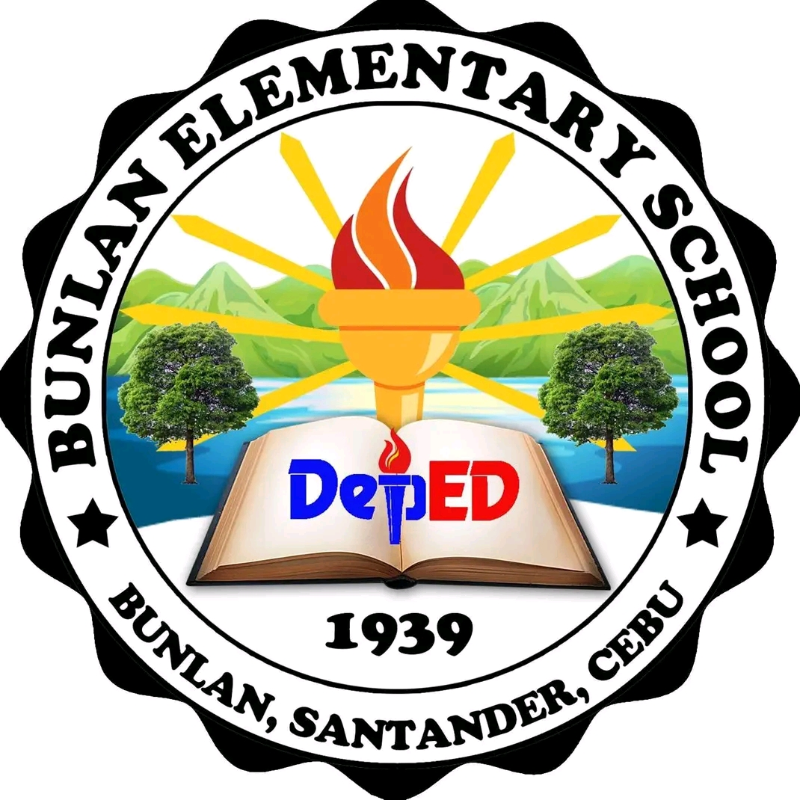

"Education is the foundation of my dreams and future."

I finished my elementary school days at Bunlan Elementary School. My elementary education became the foundation of my learning journey. During these years, I developed my basic knowledge, learned the importance of discipline, and discovered my passion for learning. My teachers and classmates played an important role in helping me build confidence, responsibility, and good values that continue to guide me today.
I graduated from Willy B. Wenceslao Memorial National High School. My high school years were filled with memorable experiences, challenges, and opportunities for personal growth. I gained valuable knowledge, strengthened my communication and teamwork skills, and became more determined to pursue my goals. These experiences prepared me for the responsibilities and challenges of college life.
I am currently a second-year Bachelor of Science in Information Technology (BSIT) student at Cebu Technological University – Argao Campus. Studying at CTU has allowed me to expand my knowledge in programming, web development, databases, and other areas of information technology. Every lesson, project, and activity motivates me to become a skilled IT professional who can contribute to society through technology and innovation.